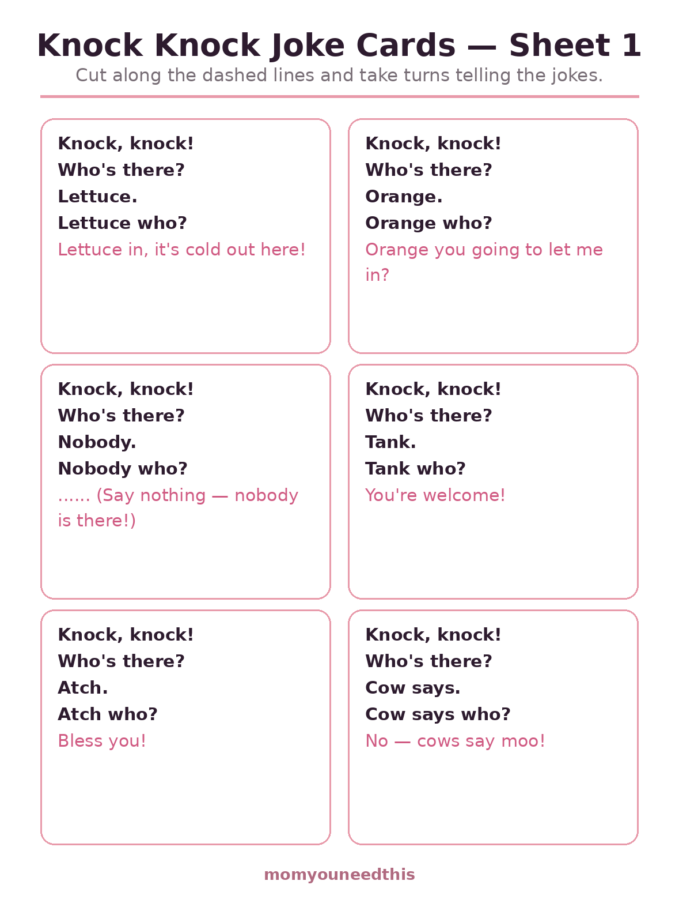
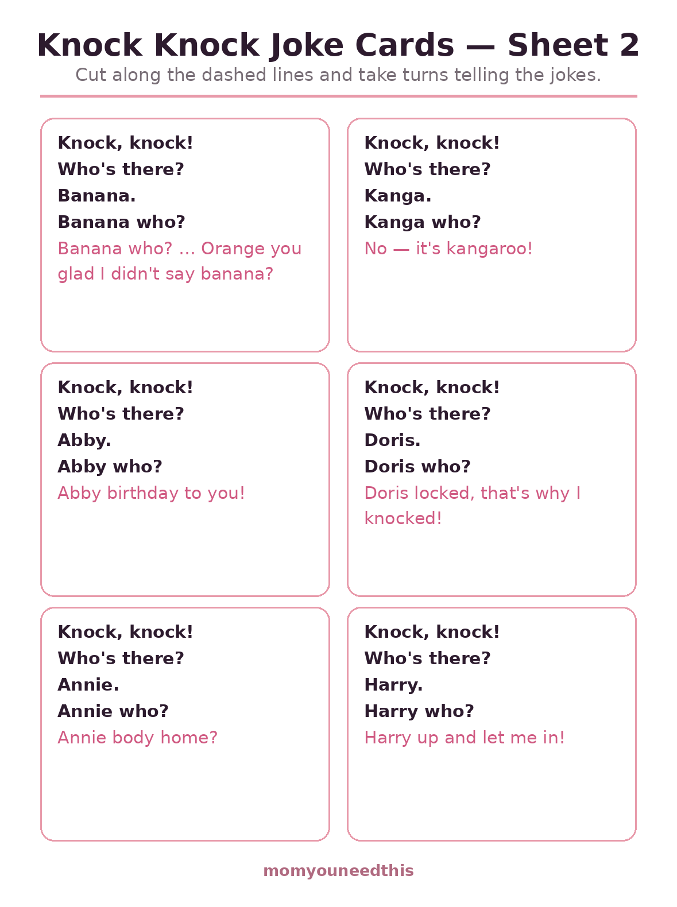
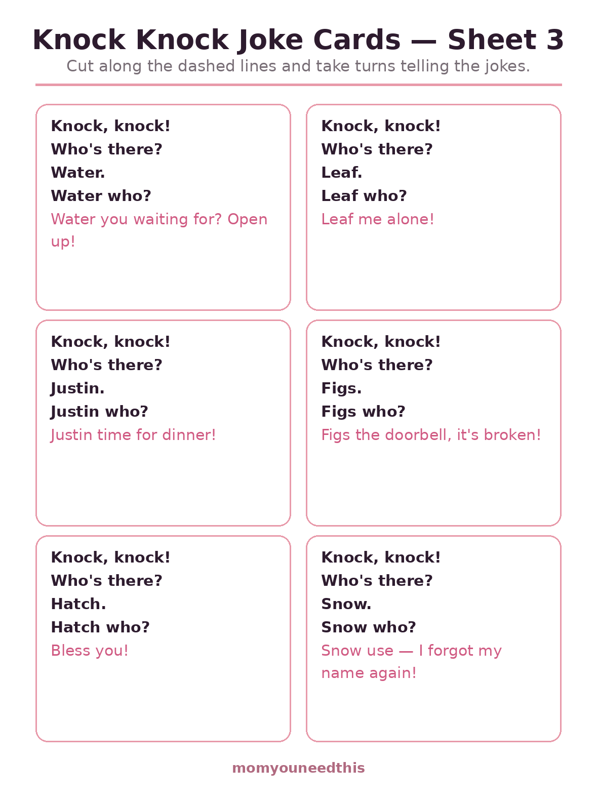
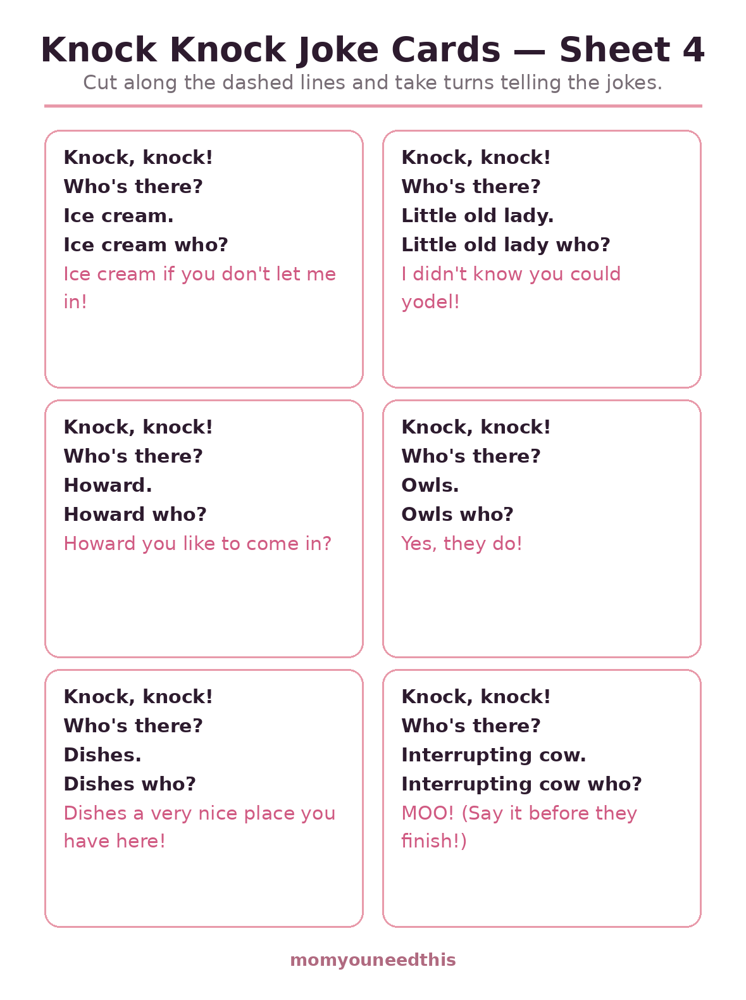

Preschool Knock Knock Jokes 24 Clean, Silly Jokes Little Kids Can Actually Tell
Twenty-four clean knock knock jokes for ages 3 to 6, grouped into animals, food and silly names — plus all 24 as free printable joke cards to cut out and keep. Every joke is gentle, easy to memorize, and built on the call-and-response pattern preschoolers love. No signup, just jokes.
Last updated: October 21, 2026
Quick Answer
This page holds 24 clean preschool knock knock jokes — animal jokes, food jokes and silly-name jokes — written out in full so a child can learn them line by line. All 24 are also on four printable joke card sheets. The jokes suit ages 3 to 6 and contain no teasing or bathroom humor.
At a Glance
- Jokes: 24, in 3 groups
- Ages: 3–6
- Printables: 4 joke card sheets (6 jokes each)
- Content: Clean — no teasing, no potty humor
- Skills: Memory, timing, word play
- Cost: Free — print at home
🦁 Animal & Nature Jokes
The jokes little kids ask for again — cows that say the wrong thing, an interrupting cow with no manners at all, and an owl with a very short answer.
Knock, knock!
Who's there?
Cow says.
Cow says who?
No — cows say moo!
Knock, knock!
Who's there?
Owls.
Owls who?
Yes, they do!
Knock, knock!
Who's there?
Kanga.
Kanga who?
No — it's kangaroo!
Knock, knock!
Who's there?
Interrupting cow.
Interrupting cow who?
MOO! (Say it fast, before they finish asking!)
Knock, knock!
Who's there?
Leaf.
Leaf who?
Leaf me alone!
Knock, knock!
Who's there?
Snow.
Snow who?
Snow use — I forgot my name again!
Knock, knock!
Who's there?
Water.
Water who?
Water you waiting for? Open up!
Knock, knock!
Who's there?
Hatch.
Hatch who?
Bless you!
🍌 Food & Kitchen Jokes
Lettuce, bananas and ice cream carry half of all preschool comedy. The banana joke has a long version — knock three times with banana, then finish with orange — and it never fails.
Knock, knock!
Who's there?
Lettuce.
Lettuce who?
Lettuce in, it's cold out here!
Knock, knock!
Who's there?
Orange.
Orange who?
Orange you going to let me in?
Knock, knock!
Who's there?
Banana.
Banana who?
Banana who? … Orange you glad I didn't say banana?
Knock, knock!
Who's there?
Ice cream.
Ice cream who?
Ice cream if you don't let me in!
Knock, knock!
Who's there?
Figs.
Figs who?
Figs the doorbell, it's broken!
Knock, knock!
Who's there?
Dishes.
Dishes who?
Dishes a very nice place you have here!
😄 Silly Names & Sounds
These run on sounds — sneezes, yodels and names that turn into whole sentences. They are the easiest first jokes for a child to memorize and perform.
Knock, knock!
Who's there?
Nobody.
Nobody who?
…… (Say nothing — nobody is there! That's the joke.)
Knock, knock!
Who's there?
Tank.
Tank who?
You're welcome!
Knock, knock!
Who's there?
Atch.
Atch who?
Bless you!
Knock, knock!
Who's there?
Abby.
Abby who?
Abby birthday to you!
Knock, knock!
Who's there?
Doris.
Doris who?
Doris locked, that's why I knocked!
Knock, knock!
Who's there?
Annie.
Annie who?
Annie body home?
Knock, knock!
Who's there?
Harry.
Harry who?
Harry up and let me in!
Knock, knock!
Who's there?
Justin.
Justin who?
Justin time for dinner!
Knock, knock!
Who's there?
Howard.
Howard who?
Howard you like to come in?
Knock, knock!
Who's there?
Little old lady.
Little old lady who?
I didn't know you could yodel!
✂️ The Printable Joke Cards
Every joke on this page is also a card. Print the four sheets, cut along the dashed lines, and the set lives happily in a purse, a glove box or the dinner-table drawer — ready for restaurants, car rides and grandparent video calls.

✂️ Download Your Free Joke Cards — Sheet 1
6 knock knock jokes on cut-out cards — sheet 1 of 4.
⬇️ Download Free Joke Cards 🖨️ Print🎁 Free printable for ages 3–6

✂️ Download Your Free Joke Cards — Sheet 2
6 knock knock jokes on cut-out cards — sheet 2 of 4.
⬇️ Download Free Joke Cards 🖨️ Print🎁 Free printable for ages 3–6

✂️ Download Your Free Joke Cards — Sheet 3
6 knock knock jokes on cut-out cards — sheet 3 of 4.
⬇️ Download Free Joke Cards 🖨️ Print🎁 Free printable for ages 3–6

✂️ Download Your Free Joke Cards — Sheet 4
6 knock knock jokes on cut-out cards — sheet 4 of 4.
⬇️ Download Free Joke Cards 🖨️ Print🎁 Free printable for ages 3–6
🌱 Why Jokes Are Real Learning
A knock knock joke is a tiny machine with five moving parts, and a preschooler who can run it is practicing memory (the parts, in order), timing (waiting for their cue), and the first discovery that words can mean two things at once — 'lettuce' sounds like 'let us,' and that doubleness is the seed of every pun, rhyme and riddle that follows. Performing for an audience that laughs is also early public speaking, in its safest possible form.
🖨️ How to Use These Worksheets
- You be the answerer. Your child knocks and delivers the name; you ask the questions. The knocker's part is shorter and much more fun.
- One joke, many tellings. Pick a single joke and tell it at breakfast, in the car and at bath time. Mastery of one joke beats a tour of ten.
- Let them 'read' the cards. A child who cannot read yet can still hold the card, recognize the joke from its first line, and perform it — that is early reading confidence.
- Applaud the tenth telling. It will come. Laugh anyway — you are building a comedian and a reader in one move.
🗺️ What's Next?
More free fun for this age:
❓ Preschool Knock Knock Jokes FAQ
Are these knock knock jokes appropriate for preschoolers?
Yes — all 24 jokes are clean and gentle: no teasing, no bathroom humor, nothing scary. They run on word sounds and silly pictures, which is exactly the humor a 3- to 6-year-old can follow and repeat.
What age are knock knock jokes for?
Children usually start enjoying them around age 3, when the call-and-response pattern clicks, and they stay funny through about age 6. A 3-year-old will need you to carry both parts at first; by 5, most kids perform them solo.
How do I teach my child to tell a knock knock joke?
Take the 'who's there' part yourself and let your child be the knocker — that is the easier role. Repeat the same joke several times in one sitting; jokes are learned by retelling, and the tenth telling is the triumphant one. The printable cards on this page help children 'read' the jokes before they can read words.
Can I print the jokes?
Yes — all 24 jokes are also on four printable joke card sheets, free to print at home with no signup. Cut along the dashed lines and keep a set in the car or the dinner-table drawer.
Are the joke cards free?
Yes — the cards and this whole page are free. Print as many sets as you like.